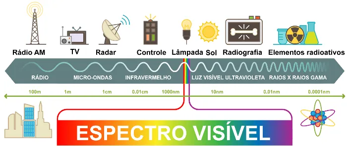

Espectro electromagnético
Todas as ondas eletromagnéticas apresentam frequência de oscilação, comprimento de onda e amplitude. Além disso, o comprimento de onda e a frequência são grandezas inversamente proporcionais, por isso, ondas de alta frequência, como os raios x ou raios gama, apresentaram comprimentos muito pequenos. A figura seguinte mostra o espectro eletromagnético e as diferentes faixas de ondas eletromagnéticas existentes.
